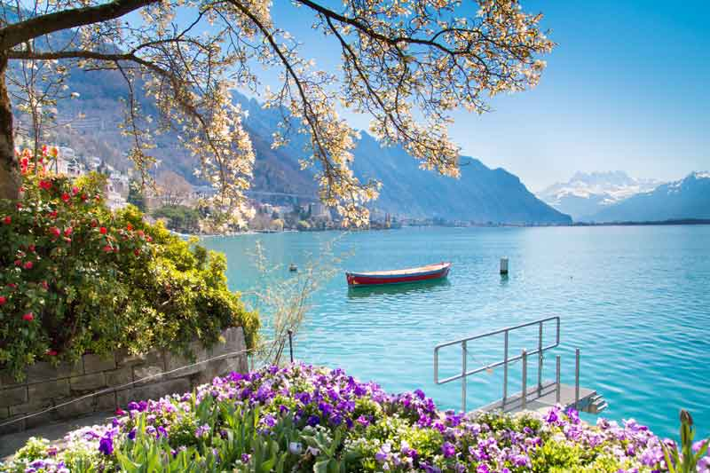

Montreux
Tourists may not be as familiar with Montreux as they are with its Lake Geneva neighbors, which makes this Swiss town such an undiscovered gem. Quaint Montreux features a waterfront promenade dotted with flowers and trees, a medieval castle and a charming old town, not to mention a statue commemorating Freddie Mercury (Queen recorded multiple albums here from 1979 to 1996). Montreux is also surrounded by vineyards and hosts a popular jazz festival every summer.
- Image credit: https://holidaystoeurope.com.au/